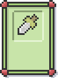

Welcome to the Slashy Dwarf Wiki
Welcome to the official Shlashy Dwarf wiki, Shlashy Dwarf is in Pre-Alpha right now and being developed by Shmellyorc, who is developing his game on Twitch
GamePlay
Some text about gameplay here
Decks and their Cards
The game's fighting system depends on cards. Every card has his own abilities, his own pros and cons. Those awesome cards are stored in decks. In the beginning of the game you choose a deck you want to start with.
The physical starting deck will contain a series of cards related to melee, physical alignment, or physical effects.
The magic starting deck will contain a series of cards related to magic, magic alignment, or magic effects.
The Alignment starting deck will contain a series of cards related to debuffing, buffing or effecting player or enemy status points.
Depending on what starter deck you choose you will receive cards. Each started deck has his own cards, although there are some cards used in all decks, like these:
Limit-Breaker
 The Limit-Breaker is a basic attack card that damages the enemy with 5% more damage than you would do else. This basic card can be used in multiple combinations, like double-attack, slashy-speedy and so on.
Red Paint
The Limit-Breaker is a basic attack card that damages the enemy with 5% more damage than you would do else. This basic card can be used in multiple combinations, like double-attack, slashy-speedy and so on.
XPNAME
 The Limit-Breaker is a basic attack card that damages the enemy with 5% more damage than you would do else. This basic card can be used in multiple combinations, like double-attack, slashy-speedy and so on.
The Limit-Breaker is a basic attack card that damages the enemy with 5% more damage than you would do else. This basic card can be used in multiple combinations, like double-attack, slashy-speedy and so on.